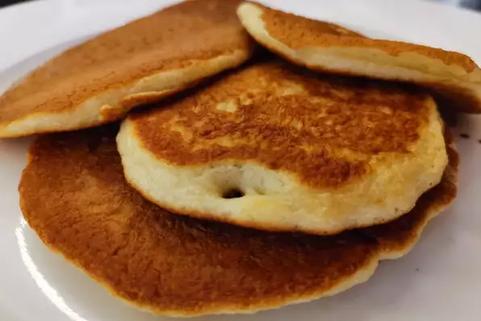

Yummy Flapjack Recipe

Description
These pancakes are not too thick, not too thin, but tender, light, buttery, and delicious.
Ingredients
- 2 cups all-purpose flour
- 3 tablespoons white sugar
- 2 teaspoons baking powder
- 1 teaspoon baking soda
- ½ teaspoon salt
- 2 cups milk
- 2 eggs
- ¼ cup canola oil
- cooking spray
Steps
- Whisk together flour, sugar, baking powder, baking soda, and salt in a bowl until no lumps remain. Add milk, eggs, and oil; whisk until batter is runny and smooth.
- Heat a nonstick griddle over medium heat and lightly coat with cooking spray.
- Working in batches, ladle a generous 1/4 cup batter for each pancake onto the preheated grill and cook until bubbles appear, 3 to 4 minutes. Flip and cook, pressing middle gently with the spatula, until bottom is lightly browned, 2 to 3 minutes more. Repeat with remaining batter.